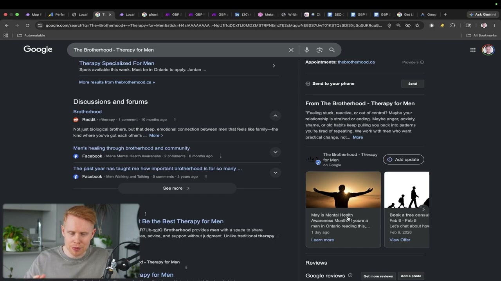
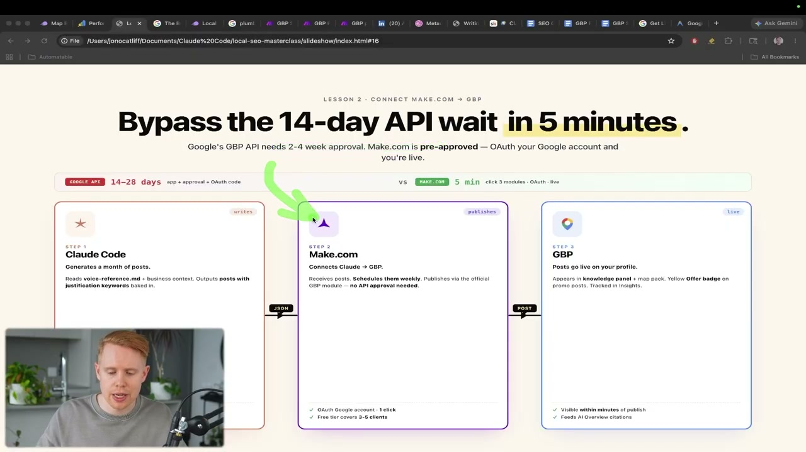
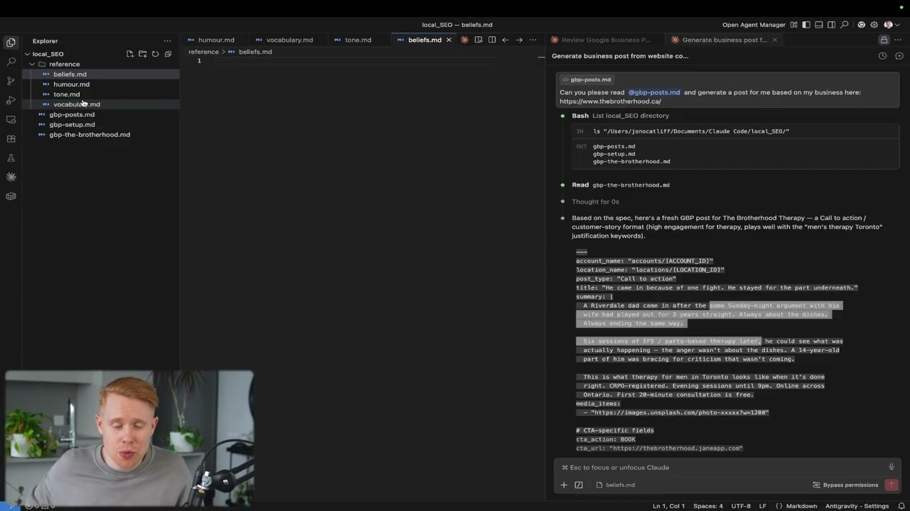
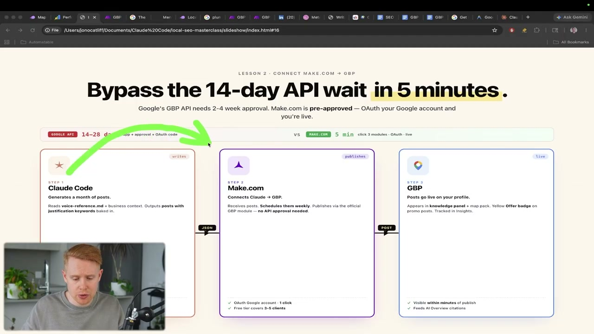
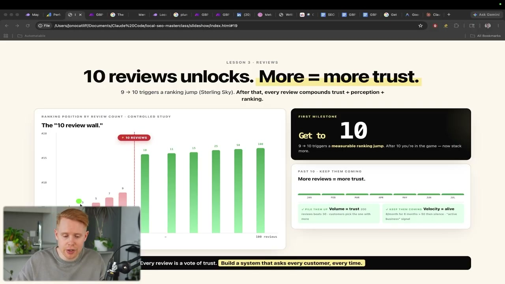
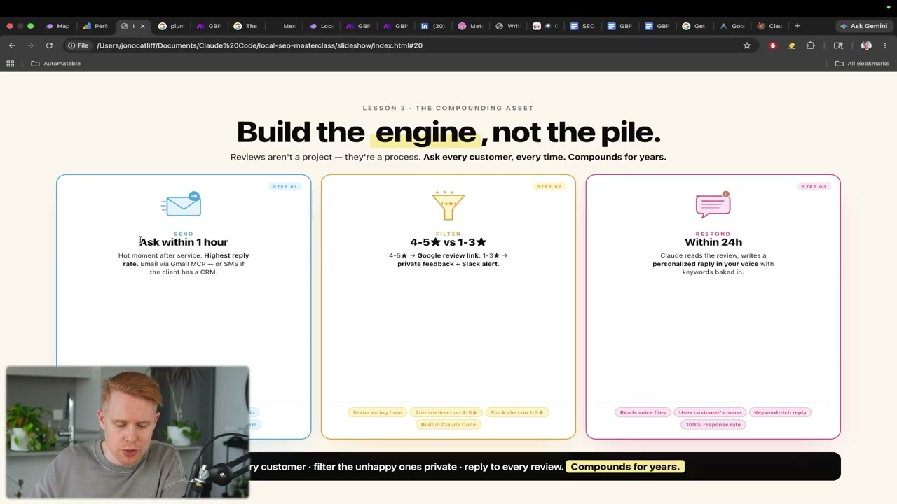
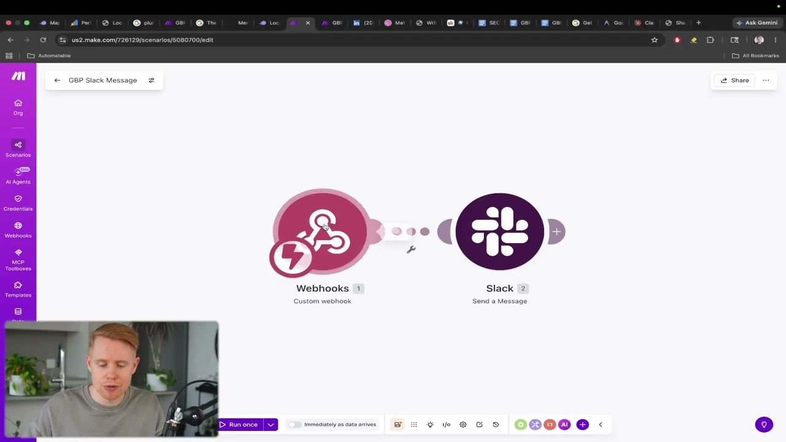
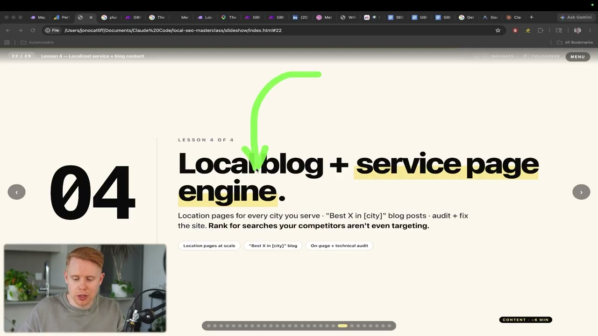
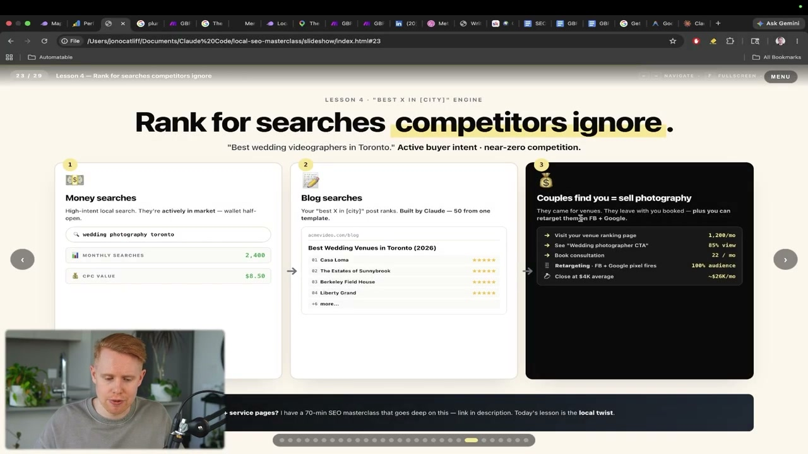
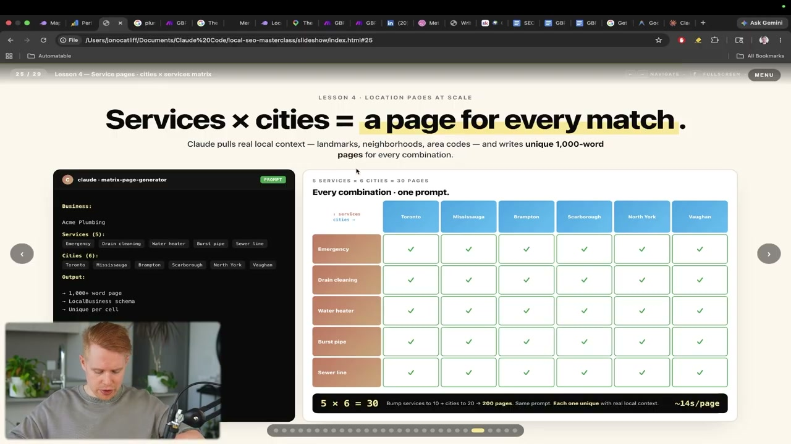

이 글은 전체 3편 중 2편입니다. 긴 영상을 주제 흐름에 맞춰 나누어 정리했습니다.
채널: Jono Catliff | 길이: 1:10:20 | 날짜: 2026-05-26
이 글은 전체 3편 중 2편입니다. 이 파트는 Google Business Profile 게시 자동화, 리뷰 수집·필터링·응답 엔진, 그리고 로컬 서비스 페이지·블로그 콘텐츠 전략으로 이어지는 중간 구간을 다룹니다.
reference 안에 humor.md, vocabulary.md, tone.md, beliefs.md 같은 파일을 두는 방식입니다. 여기에 LinkedIn 글, 이메일, 세일즈 콜 녹취, 과거에 직접 쓴 글을 붙여넣고 Claude에게 각 파일에 맞게 추출하게 합니다. 예를 들어 말투는 “직접적이고 평이하며 자신감 있지만 거만하지 않음”, 어휘는 “TLDR, dropped, master class, stack, scale” 같은 식으로 정리됩니다. 유머도 “dad joke energy”, “self-aware narration”, “internet native slang”처럼 스타일화해 두면 이후 게시물이 훨씬 자연스러워집니다.business_context.md 파일을 만들어 웹사이트 URL에서 사업 정보를 추출하게 합니다. 이 파일은 “무엇을 하는 사업인지”, “누구에게 제공하는지”, “어떤 서비스와 문맥을 갖는지”를 Claude가 기억하게 만드는 역할을 합니다. 즉 게시물 자동화는 단순한 프롬프트 한 줄이 아니라, 브랜드 보이스 파일과 사업 맥락 파일을 함께 참조하는 체계입니다. 이렇게 해야 Claude가 “John처럼 쓰기” 또는 “내 사업자처럼 쓰기”에 가까워집니다.
이 구간의 첫 전환점은 Google Business Profile 게시물을 SEO 순위 상승용 마법 버튼으로 오해하지 말라는 설명입니다. 발표자는 GBP 게시물이 매달 프로필 조회자를 갑자기 1,000명 더 만들어주는 장치가 아니라, 이미 프로필에 들어온 사람을 웹사이트 방문이나 전화로 움직이게 하는 장치라고 선을 긋습니다. 따라서 게시물의 목적은 “노출 증가”보다 “기존 노출의 수익화”에 가깝습니다.
동시에 그는 간접 순위 효과를 부정하지 않습니다. 더 많은 사람이 웹사이트를 방문하고 전화를 걸면 Google은 해당 업체가 사용자에게 반응을 얻고 있다고 해석할 수 있습니다. 검색 결과의 AI Overview나 AI feed에도 GBP 게시물이 끌려 들어갈 수 있고, 비활성처럼 보이는 프로필을 방지하는 활동성 신호도 됩니다. 키워드와 게시물이 맞아떨어질 때 Google Maps에서 노란 배지처럼 눈에 띄는 표시가 붙을 수 있다는 점도 클릭률 측면에서 중요합니다.

발표자가 제시하는 자동화 구조는 Claude Code가 게시글을 만들고, Make.com이 이를 받아 Google Business Profile에 게시하는 방식입니다. 직접 Google Business Profile API로 연결할 수도 있지만, API 키 발급과 승인 절차가 오래 걸리는 것이 문제입니다. 슬라이드는 Google API 경로를 14~28일 대기, Make.com 경로를 약 5분 연결로 대비시킵니다. 그래서 그는 API를 나중에 쓰더라도 처음에는 Make.com으로 시작하라고 권합니다.
Make.com 시나리오에서는 Claude가 JSON 형태로 게시 데이터를 보내고, Make.com이 이를 Google Business Profile 모듈로 전달해 실제 게시합니다. 사용자가 해야 할 일은 Google Business Profile 계정을 연결하고, Make.com 웹훅 주소를 Claude 프롬프트에 알려주는 것입니다. 게시 전에는 Make.com에서 “Run once” 또는 새 데이터 대기 상태로 두어 테스트 입력이 실제로 들어오는지 확인합니다. 이 과정이 성공하면 Claude에서 만든 게시물이 GBP에 바로 나타납니다.

첫 생성 결과가 너무 일반적인 AI 문장처럼 들리자 발표자는 “내가 쓴 것처럼 들리게 만드는 것”을 핵심 개선점으로 제시합니다. 이를 위해 reference 폴더를 만들고, 그 안에 humor.md, vocabulary.md, tone.md, beliefs.md를 둡니다. 각 파일은 사업자의 문체와 사고방식을 분리해 저장하는 역할을 합니다. Claude는 이후 게시물, 리뷰 답변, 블로그 글, 서비스 페이지를 만들 때 이 파일들을 참조합니다.
입력 자료는 꼭 정돈된 브랜드 가이드일 필요가 없습니다. LinkedIn 게시물, 이메일, 통화 녹취, 과거 글, 판매 대화 등 “내가 실제로 쓴 말”이면 됩니다. Claude에게 그 자료에서 신념, 유머, 말투, 어휘를 추출해 각 파일에 넣으라고 요청합니다. 더 많은 자료를 줄수록 결과물은 특정 사업자의 목소리에 가까워지고, 일반적인 AI 글의 느낌은 줄어듭니다.

레퍼런스 파일과 사업 맥락 파일이 준비되면, 프롬프트는 단순 생성에서 실제 실행으로 바뀝니다. 발표자는 “새 게시물을 만들고 방금 추가한 Make.com 웹훅으로 보내라”는 식으로 Claude에게 지시합니다. 동시에 방금 만든 모든 레퍼런스 파일을 참조해 실제 사업자가 쓴 듯한 문체를 반영하게 합니다. 이렇게 하면 Claude는 게시물 텍스트, 제목, CTA, 이미지 URL 같은 구조화된 데이터를 만들고 Make.com으로 보낼 수 있습니다.
실제 결과에서는 “Old way / New way”처럼 대비 구조를 가진 게시물이 생성됩니다. 발표자는 이 결과가 이전보다 훨씬 낫고 실제 자신이 쓸 법한 문장에 가깝다고 평가합니다. 이미지의 경우 기본적으로 스톡 라이브러리에서 가져올 수 있지만, 이는 최후의 수단에 가깝다고 설명합니다. 이상적으로는 실제 사업 사진을 쓰거나, 필요하면 fall.ai 같은 이미지 생성 플랫폼을 연결해 더 적절한 이미지를 만들 수 있습니다.

다음 주제는 Google 리뷰입니다. 발표자는 Google Business Profile 가시성을 높이는 데 가장 강력한 요소로 리뷰를 꼽습니다. 먼저 최소 10개의 리뷰를 확보해야 하며, 10개 전까지는 Google이 업체를 적극적으로 보여주지 않는 애매한 구간에 머물 수 있다고 설명합니다. 스크린샷의 자료도 9개에서 10개로 넘어갈 때 순위 점프가 발생한다는 논지를 뒷받침합니다.
하지만 리뷰는 10개를 넘긴 뒤가 더 중요합니다. 이후에는 총량뿐 아니라 리뷰가 꾸준히 들어오는 속도, 즉 velocity가 중요합니다. 한 달에 리뷰 50개를 받고 이후 아무것도 없으면 Google은 이를 건강한 신호로 보기 어렵습니다. 이상적으로는 매달 8개 정도처럼 일정하게 새 리뷰가 들어오는 구조가 좋다고 설명합니다.

발표자의 핵심 표현은 리뷰를 “쌓아두는 프로젝트”가 아니라 “매번 작동하는 엔진”으로 만들라는 것입니다. 엔진은 세 부분으로 구성됩니다. 첫째, 모든 고객에게 리뷰를 요청해야 합니다. 지역 비즈니스에서 리뷰는 생명선이며, 요청하지 않으면 돈을 놓치는 것과 같다고 말합니다.
둘째, 리뷰를 필터링해야 합니다. 1~3점의 불만족 고객을 바로 Google 리뷰 페이지로 보내면 오랫동안 사업에 악영향을 줄 수 있습니다. 셋째, 4~5점 고객은 Google 리뷰 링크로 보내고, 리뷰가 실제로 올라오면 24시간 안에 답변합니다. 이 구조는 고객마다 반복되며 장기간 신뢰와 순위 신호를 누적합니다.

발표자는 Claude Code에게 Next.js 기반 원페이지 웹앱을 만들게 합니다. 이 앱은 두 가지 질문을 담습니다. 하나는 “친구나 가족에게 우리를 추천할 가능성이 얼마나 되는가”를 1~5점 척도로 묻는 질문이고, 다른 하나는 자유롭게 피드백을 남기는 장문 입력입니다. 처음에는 필터링 메커니즘을 빠뜨렸지만, 이후 추가 프롬프트로 보완합니다.
1~3점 응답은 Google로 보내지 않고 Make.com 웹훅을 통해 Slack으로 전달합니다. 목적은 고객이 공개적으로 나쁜 리뷰를 남기기 전에 내부적으로 문제를 해결하는 것입니다. 환불, 사과, 추가 조치, 직접 대화 같은 방식으로 상황을 다룰 수 있습니다. 4~5점 응답은 Google Business Profile의 “Get more reviews” 링크로 리디렉션하여 실제 Google 리뷰 작성 페이지로 이동시킵니다.
발표자는 5점만 Google로 보내고 4점을 제외하는 선택도 가능하다고 언급하지만, 본인은 그것이 실수라고 봅니다. 이유는 소비자 심리상 5.0점보다 4.7~4.9점을 더 현실적이고 신뢰할 만하게 느낄 수 있기 때문입니다. 예를 들어 25개 리뷰가 모두 5점이면 조작되었거나 뭔가 숨기는 것처럼 보일 수 있습니다. 반면 4.9점은 약간의 부정 리뷰가 있어 더 자연스럽고 실제 업체처럼 보입니다.
리뷰 응답 자동화에서는 4~5점 리뷰만 AI가 자동 답변하도록 설정합니다. 1~3점 리뷰는 상황이 민감할 수 있으므로 AI 답변이 오히려 고객을 더 화나게 만들 위험이 있습니다. 따라서 낮은 평점은 자동 공개 대응보다 신중한 수동 대응이 낫습니다. 높은 평점에 대해서는 Claude가 고객의 말투와 키워드를 반영해 개인화된 답변을 만들고 Google Business Profile에 게시할 수 있습니다.

리뷰 섹션이 끝나면 발표자는 Google Maps 영역에서 일반 검색 결과 영역으로 관심을 옮깁니다. 여기서 다루는 것은 서비스 페이지와 블로그 글입니다. 서비스 페이지는 “plumber in Toronto”처럼 구매 의도가 강한 money keyword를 겨냥합니다. 사용자가 이런 키워드를 검색한다는 것은 실제로 업체를 고용하거나 구매할 가능성이 높다는 뜻입니다.
반면 로컬 블로그는 직접적인 서비스 검색은 아니지만 잠재 고객의 주변 관심사를 겨냥합니다. 예를 들어 “best wedding venues in Toronto”는 웨딩 사진 서비스 자체는 아니지만, 결혼식장을 찾는 사람은 웨딩 사진작가도 필요할 가능성이 높습니다. 사용자는 블로그 글로 유입된 뒤 서비스 문의로 전환될 수 있습니다. 전환되지 않더라도 Google Tag와 Facebook Pixel을 통해 리마케팅 대상이 될 수 있습니다.

로컬 블로그의 핵심은 키워드 끝에 도시명을 붙이는 것입니다. “best wedding venues”만 쓰면 전 세계, 북미, 캘리포니아, 로스앤젤레스 등 검색 의도가 너무 넓어집니다. “best wedding venues in Toronto”처럼 지역명을 붙이면 경쟁 난도가 낮아지고 실제 지역 고객에게 도달할 가능성이 커집니다. 이렇게 하면 일반적인 전국 단위 콘텐츠보다 로컬 비즈니스에 맞는 전환 가능성이 높아집니다.
스크린샷의 예시는 “wedding photography toronto” 같은 money search와 “Best Wedding Venues in Toronto” 같은 blog search를 연결합니다. 검색량 2,400, CPC $8.50 같은 수치가 제시되어 이 키워드가 실제 광고 가치와 구매 의도를 가진다는 점을 보여줍니다. 사용자가 웨딩 베뉴 글을 읽고 사진작가 CTA를 보거나, 나중에 Facebook·Google 리타겟팅 광고를 볼 수 있습니다. 이 전략은 “서비스를 직접 검색하지 않았지만 곧 필요할 사람”을 먼저 확보하는 방식입니다.
서비스 페이지를 만들기 전에 발표자는 사이트 렌더링 방식의 중요성을 설명합니다. 세 가지 방식은 SSG, SSR, CSR입니다. 그는 SEO 목적이라면 Static Site Generation, 즉 SSG를 써야 한다고 강하게 말합니다. Google이 페이지를 빠르게 크롤링하고 읽고 색인할 수 있어야 검색에 노출될 수 있기 때문입니다.
비유는 피자 가게입니다. SSG는 가게에 들어가 이미 준비된 피자 한 조각을 사고 2초 만에 나오는 상황입니다. SSR은 주문 후 피자를 굽느라 20분 기다리는 상황이라 SEO에 상대적으로 덜 최적화되어 있다고 설명합니다. CSR은 손님이 직접 피자를 만들어야 하는 상황에 비유되며, 아무리 시간이 지나도 Google 순위에 오르기 어렵다고 단정합니다.

서비스 페이지 전략은 매트릭스로 설명됩니다. 한쪽에는 도시가 있고 다른 한쪽에는 서비스가 있습니다. 이를 지퍼처럼 맞물리면 “emergency plumbing Toronto”, “emergency plumbing Mississauga”, “drain cleaning Brampton”, “water heater Scarborough” 같은 조합이 생깁니다. 각각의 조합은 별도 서비스 페이지가 될 수 있습니다.
발표자는 하나의 페이지를 만들면 한 번의 기회만 갖는 것이지만, 50개 페이지를 만들면 50번의 랭킹 기회를 갖는다고 설명합니다. 다만 무작정 1,000개를 만들라고 하지는 않습니다. 너무 많은 페이지가 거의 같은 내용이면 Google이 thin content로 판단할 수 있기 때문입니다. 보수적으로는 10개부터, 많게는 400개 정도까지가 현실적인 범위라고 말합니다.
서비스 페이지는 단순 복붙이 아니라 각 조합마다 고유해야 합니다. 스크린샷은 5개 서비스와 6개 도시를 조합해 30개 페이지를 만드는 구조를 보여줍니다. Claude는 지역 랜드마크, 동네, 지역번호 같은 실제 로컬 맥락을 끌어와 각 페이지를 다르게 만들 수 있습니다. 출력물에는 약 1,000단어 페이지, LocalBusiness schema, 셀별 고유 콘텐츠가 포함되는 구조가 제안됩니다.
“Google Business Profile posts”의 목적은 새 조회를 폭발시키는 것이 아니라, 이미 있는 조회를 리드와 전화로 바꾸는 데 가깝다.
“Build the engine, not the pile.” 리뷰는 한 번 모으는 프로젝트가 아니라 모든 고객에게 반복되는 시스템이어야 한다.
10개 리뷰는 첫 임계값이고, 그 이후에는 매달 꾸준히 들어오는 리뷰 속도가 중요하다.
5.0보다 4.7~4.9가 더 현실적이고 신뢰감 있게 보일 수 있다.
서비스 페이지는 도시와 서비스를 지퍼처럼 결합해 여러 구매 의도 키워드에 대응하는 방식이다.
이 파트의 핵심은 로컬 SEO를 수작업 체크리스트가 아니라 반복 가능한 자동화 시스템으로 바꾸는 것입니다. GBP 게시물은 Claude Code와 Make.com으로 생성·전송·게시하고, 리뷰는 요청·필터링·Google 유도·응답까지 엔진화합니다. 블로그와 서비스 페이지는 구매 의도 검색과 인접 관심 검색을 나누어 공략하며, 특히 지역명과 서비스 조합을 체계적으로 확장합니다.
실무적으로 중요한 점은 자동화 자체보다 입력 품질입니다. 브랜드 보이스, 어휘, 유머, 신념, 사업 맥락을 파일로 정리해야 AI 결과물이 실제 사업자처럼 들립니다. 리뷰 자동화도 무조건 공개 리뷰로 밀어붙이는 것이 아니라, 낮은 평점은 내부 해결로 보내고 높은 평점만 Google로 유도하는 게 핵심입니다. 서비스 페이지 확장 역시 수량보다 고유한 로컬 맥락과 색인 가능한 SSG 구조가 중요합니다.
댓글
GitHub 이슈 기반 댓글 시스템입니다.